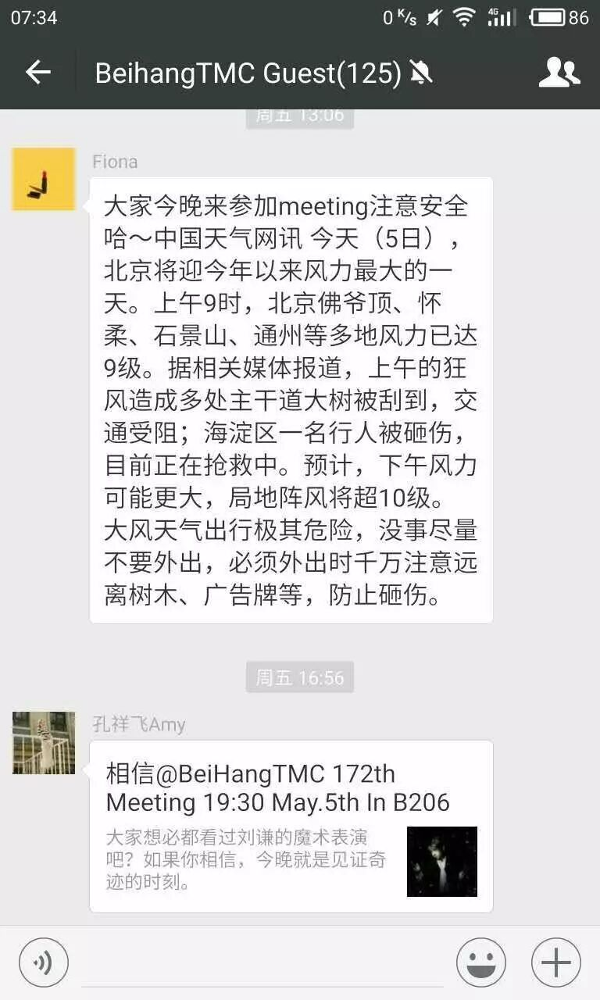
北京这几天刮9级以上阵风，给大家的出行带来了不便。虽然出行条件如此恶劣，但是也有不少同学慕名来参加我们北航头马一周一次的例会，在这里我代表北航ToastMaster俱乐部感谢你们的付出，北航头马因为你们而出彩!
这次会议的主题是“相信”，我在Welcome letter上借用了魔术师刘谦的专用术语："接下来就是见证奇迹的时刻”，大概是说，大家在这么恶劣的天气来到头马，也算是个奇迹了吧？因为我一直相信大家能来，哈哈，开个玩笑。
作家海明威说：“生活总会让我们遍体鳞伤，但到后来，那些受伤的地方一定会变成我们最强壮的地方”。 相信这个词的更多延伸意是“信任”，这个世界上最难得到的就是信任，最难挽回也是信任。信任一个人，付出的是你的真心，得到的如果是伤心，那么下次你付出的就是猜忌心，不会再有同情心，这就是你伤害一个人，很难再伤害第二次的原因。
那么问题来了，什么是信任呢？曾经有个经典的团队游戏风靡一时，游戏很简单，就是让团队的每一个人蒙住眼睛，站在一个高台的边缘后往后倒，然后团队的人在高台下面搭好架子接住那个往后倒的人，规则是最快完成的团队获胜，第一个尝试信任团队成员的心里斗争最复杂。
1. 如果你有一个好朋友，你邀请他旅游，而他曾经拒绝你很多次，这次你想去旅游，你会不会再邀请他（她）？
易品说他是可以理解他们这些工科男，忙的时候无法分身的时候，而且不会单独一个人出去旅行，所以他是传说中“无基不欢”的人，旅游当然要叫上好基友。而且他说，旅行最重要的不是去哪里，最重要的是和谁在一起。
2. 你相信超越友谊而低于爱情的男女关系吗？
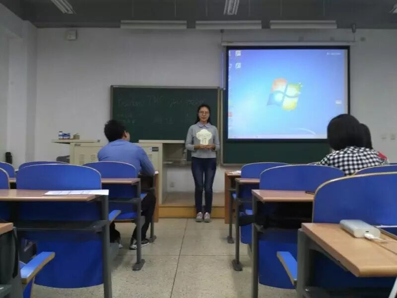
胡雪欢同学的观点很独到，她说男女之间的纯友谊一定是建立在相互嫌弃的基础之上的，如果不嫌弃一个人，就不要去超越友谊了，划清界限。纯真的你真的相信这个世界上存在“蓝颜”吗？
3. 你的很多好朋友都追求过一个女生，但是结果都失败了，朋友怂恿你也去试试，你该怎么办？
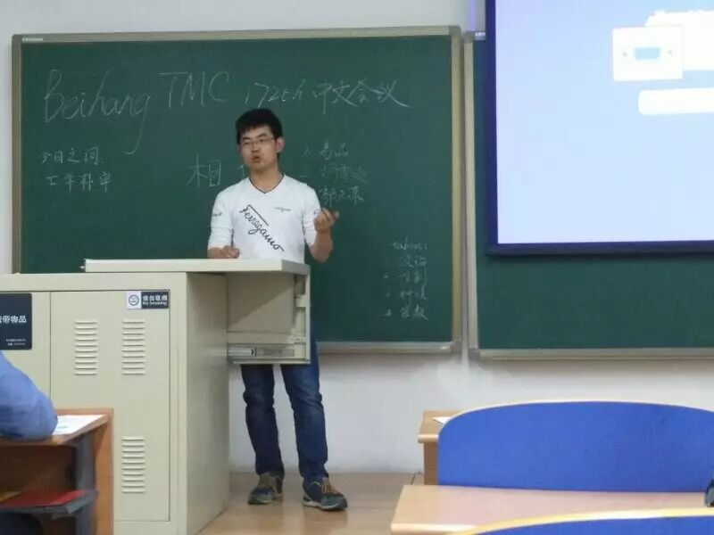
郭元东同学的逻辑一般都很清晰，首先是追还是不追的问题，如果这个问题都搞不清楚，其他也就没有意义。如果女生各方面和自己很合适，就要进行战略分析，是自己这帮朋友的问题，还是女生的问题，然后再“对症下药”。难道这就是恋爱高手，该出手时才出手？致敬《我们曾经追过的女生》。
4. 如果你们是一对夫妻，丈夫如何向妻子隐藏自己和同事的出轨行为，取得妻子的信任？
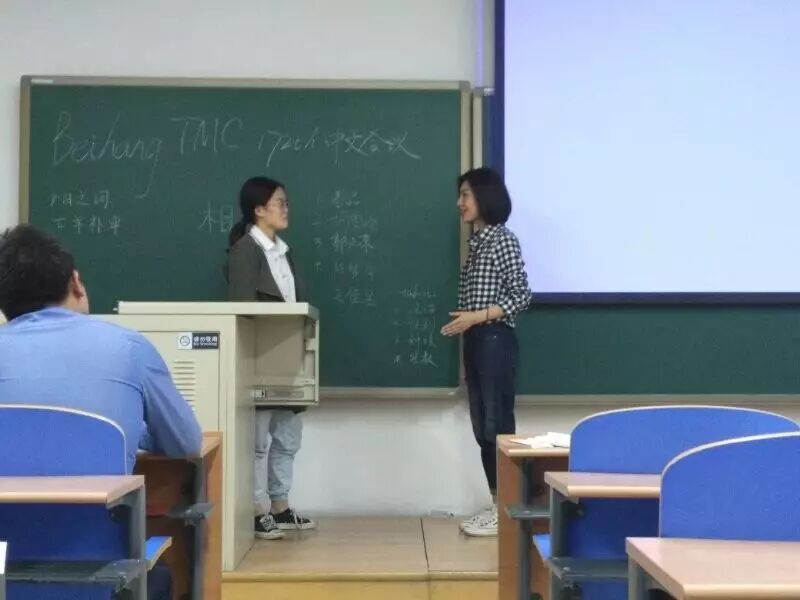
好学生就不要看了，太污了！吴佳昱同学就是我说的慕名来北航头马的北邮学生会会长，然而她却扮演了妻子的角色。陈梦月同学能言善辩的口才，对妻子晓之以理，动之以情，最后妻子不得不屈服在她的“淫威”之下，看来这次她又只能忍了。
5. 有个朋友向你借钱，你不相信他（她）会还你钱，你会怎么办？
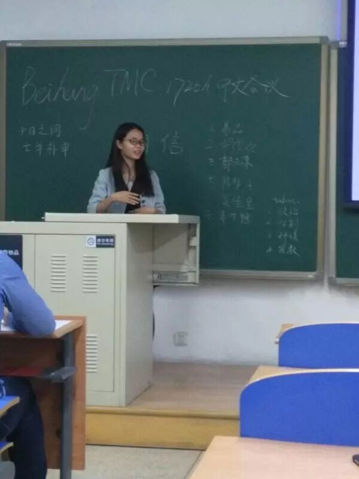
朱巾帼同学的答案应该比较中性，不借呗，然后关系好的说一顿，关系不好的就算了。家里人就无所谓了，有钱就借。如果你想和某个人绝交，就向他（她）借钱吧！
6. 有一个很赚钱的项目，你怎么说服老板你有能力胜任？
郭天辉同学是一个经常不加班的程序员，所以相对来说没有这方面的经验。但是改变是第一要诀，首先要开始加班，然后找老板聊项目的相关技术，再找同事去建立团队干活，道理都知道，好像挺难的。
7.相信命运，还是相信可以改变命运？
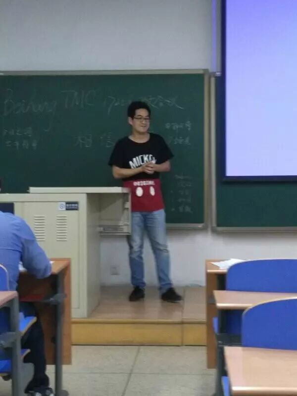
王永光博士首先谈了自己的从小以来的经历，当上博士不容易，自己也是从小地方的一步一个脚印走不来的。虽然自古有“生死有名，富贵在天”的俗语，但是君不见高举“将相安有种乎”的陈胜吴广起义，以史为鉴，命运掌握在自己的手上，经过努力是可以改变的。
8. 如何相信一个男生是真的很喜欢你？
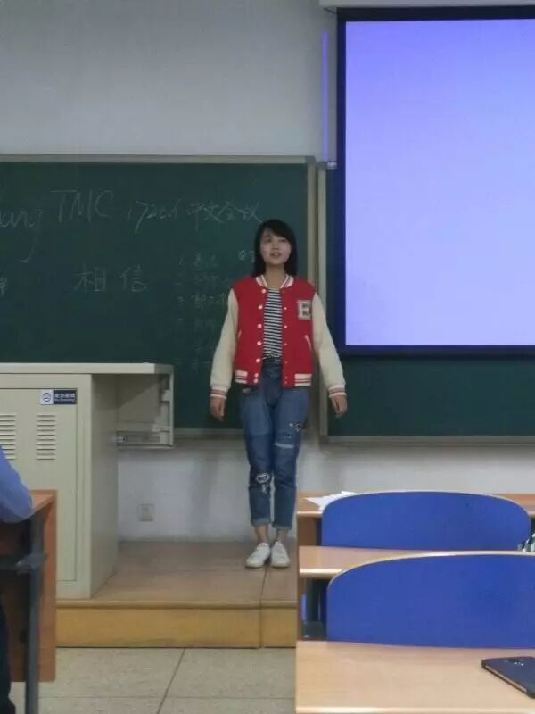
单身狗注意了，陈星同学要教大家脱单的技巧了。如果一个男生真的很喜欢你，他一般会做和别人不一样的事情，比如唱歌、跳舞就不说了。但是不要太快表白，一般女生都很难接受的，后期的价值观也很重要。时间官党堃原同学说陈星同学谈到自己男朋友的时候嘴角有往上翘，你们有看到吗？
9. 信任什么最重要？
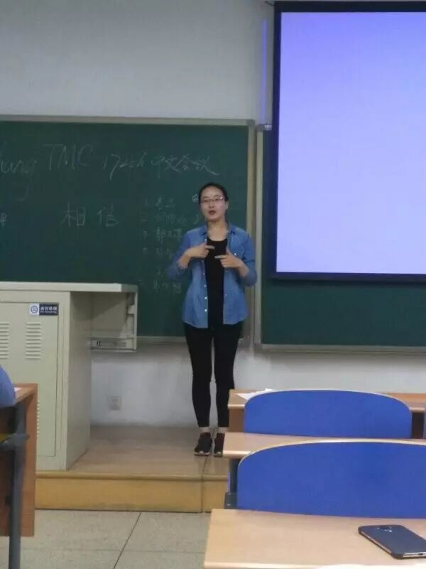
宋晓欣同学总结概括为以下两点，一是了解才能有信任；二是沟通很重要。这句是男女朋友要时不时小聚一下，好好的沟通吧？长时间不沟通的情侣等着被分手吧。
10. 创业者怎么说服投资者投资自己的项目？
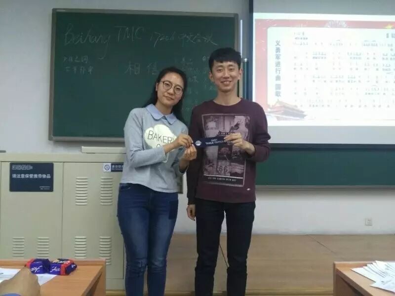
李彦明同学结合目前的局势，准备了“小粉车”项目，找胡雪欢同学投资。他比较小黄车，自己的“小粉车”有三大优势，一是GPS非常准、二是可以夏天避雷、三是自动配对当日相同车尾号的单身男女，给她们组织一次Ice break meeting。虽然t听起来很诱人，但是由于时间的关系，项目最终没有拉到投资。
无题
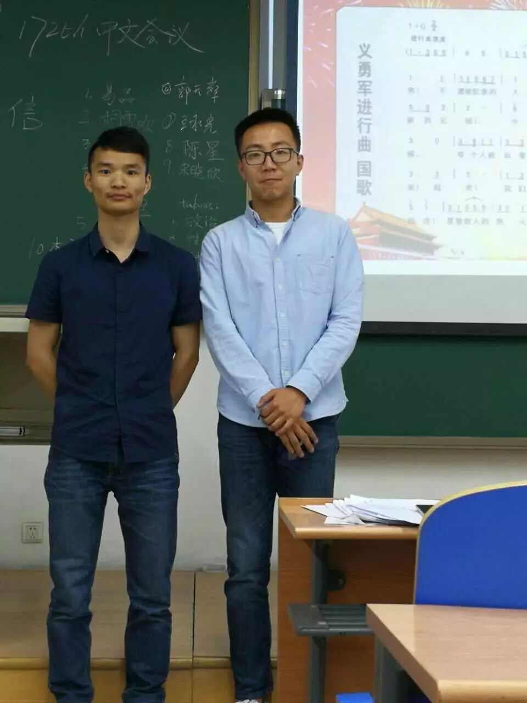
易品的CC4有点“无题”，但是从自己抢上微机课和帮同学代考体测被罚的小事上总结出了，犯错要主动认错，才不会后面被动承担更大的后果，还有就是犯错之后的自我调整能力太差。以后尽量少犯错，多犯傻吧，或许这个办法可以帮到你。最后演讲上升到高潮，讲了名族大义，结合近来的实事，从航母下水到C919的首飞，畅谈了中国人强，则民族强，天下兴亡，匹夫有责的民族情怀。有点让我怀念罗永浩老师，一直都很有情怀。
最后，来一张大家“萌萌哒”的合照。
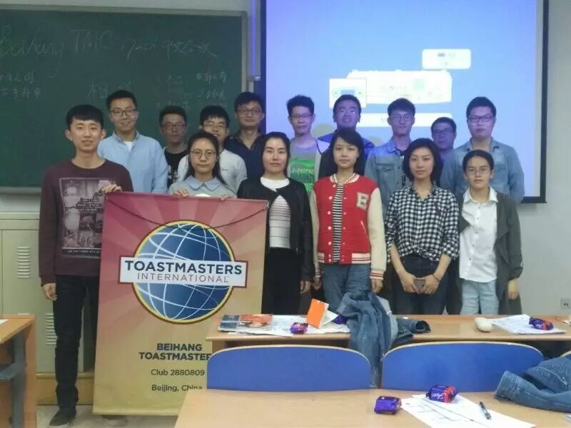